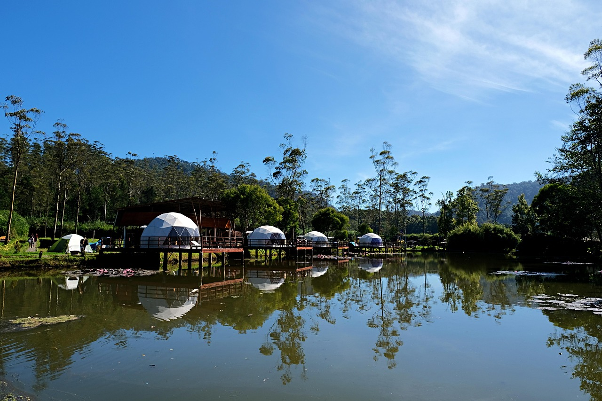

露營心得分享：北台灣秋季露營推薦
大家好！最近趁著秋高氣爽的好天氣，我走訪了北台灣幾個知名的露營地，想和大家分享一下心得和推薦。秋季是露營的黃金季節，北台灣的山區此時氣溫適中，早晚涼爽，非常適合露營活動。
以下是我這次走訪的幾個營地，以及個人評價和建議：
1. 拉拉山森林遊樂區附近營地
拉拉山以神木和水蜜桃聞名，秋季前往可以欣賞到山林間的層層霧氣，非常夢幻。我選擇的是森林遊樂區附近的私人營地，環境清幽，設施完善。
優點：
- 視野開闊，可以遠眺山景
- 晚上可以看到滿天星斗，光害少
- 營主很熱情，會提供當地旅遊資訊
- 衛浴設施乾淨
缺點：
- 山路蜿蜒，開車需要特別小心
- 手機訊號不穩定
- 秋季早晚溫差大，需要多準備保暖衣物
推薦指數：★★★★☆
2. 宜蘭太平山國家森林遊樂區
太平山的秋色絕美，楓葉、黃藤變色，整座山都染上了金黃和紅色。我在這裡住了兩晚，是這次行程中最難忘的體驗。
優點：
- 秋季楓紅景色絕美
- 有溫泉可以泡，露營後特別舒服
- 森林浴效果極佳，空氣清新
- 有多條登山步道可以選擇
缺點：
- 假日人潮較多，需提前預訂
- 海拔較高，溫度比平地低很多
- 部分區域需要申請入山證
推薦指數：★★★★★
3. 新北市十分青年谷
位於平溪區的十分青年谷，是近年來很受歡迎的露營地。這裡結合了溪流、瀑布和山林景觀，而且離台北很近，非常適合週末短程露營。
優點：
- 交通便利，開車約1小時可從台北到達
- 可以順道遊覽平溪線和放天燈
- 營地旁有溪流，夏秋之際可以戲水
- 附近有多個景點可以一併遊覽
缺點：
- 假日遊客較多，較吵雜
- 部分營位地勢不平
- 雨季時溪水可能暴漲，需注意安全
推薦指數：★★★★☆
露營裝備分享
秋季露營，我特別推薦以下裝備：
- 四季帳：秋季早晚溫差大，四季帳可以更好地保持帳內溫度
- 保暖睡袋：山區夜晚溫度可能降到15度以下，建議準備溫度範圍至少到10度的睡袋
- 防風外套：山區風大，防風外套必不可少
- 頭燈：秋季日照時間縮短，好的照明設備很重要
- 防水地布：秋季偶有陣雨，地布可以有效防潮
以上就是我這次北台灣秋季露營的心得分享，希望對計劃秋季露營的朋友有所幫助。如果有任何問題，歡迎在下方留言討論！
最後分享一張太平山日出的照片，絕對值得早起！


發表留言